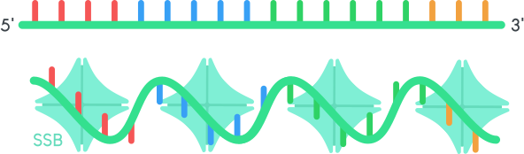

Future Ideas and Improvements
For our journey, we had the vision of improving enzymatic DNA synthesis to a point where it is more efficient. Because of the limitation of time and resources, we could not put each of our ideas into effective practice. However, the limitation of this competition shall not hold us back from expressing our concepts. Once the fundamental framework for DNA data storage is established, we hope that our research can push DNA synthesis further, making it more effective.
Long-term Storage of DNA
The correct storage of DNA is a crucial aspect of data saving systems. DNA degrades fast after contact with UV light, high temperatures and nucleases. That causes gaps in the code and thus retrieval of false information. A suitable method for keeping the molecule undamaged and storing information for millennia is the usage of silica microcapsules. Those are tiny glass particles, up to 10 000 times thinner than a sheet of paper. This method, researched by the two scientists Robert Grass and Wendelin Stark, is inspired by nature: fossil bones store genetic information safely for centuries. The capsules can be treated with a fluoride solution that dissolves the glass but does not harm the code.
The next step in our project would be the encapsulation and retrieval of our synthesized DNA to make our DNA data storage system complete. 12
Prevention of secondary structures
One of the biggest problems in enzymatic DNA synthesis is the formation of secondary structures in single-stranded DNA. The ssDNA synthesized by our semi-specific synthesis method consists of fragments with the same nucleotide making it more likely to form secondary structures. Once the single strand forms a hairpin, the elongation is hindered.
Therefore, we elaborated ideas on the prevention of secondary structures.
Single-stranded binding proteins
We believe that the solutions in synthetic biology lay in nature. SSB’s (single strand binding protein) stabilize single-stranded DNA in replication. Coincidentally we found out that Sebastian Palluk, an expert in the field of enzymatic DNA synthesis, also worked with SSBs in his study. Nevertheless, both our team and Palluk, concluded that the commercially available SSBs do not work for our purposes because those bind too stronlgy to the strand and cannot be deatached after the reaction. Still, we believe that SSB’s have a huge potential to prevent secondary structures and improve the synthesis.

Figure 1: Single-stranded binding proteins
Hybridization with short oligonucleotides
Another method for preventing secondary structures is adding short oligonucleotides with 3’ddNTP to our reaction so that these molecules can hybridize with the arising strand. To ensure that the TdT does not elongate the short oligos, we used an artificial dideoxynucleotide (ddNTP), which is missing the third 3’ carbon molecule. Attaching more nucleotides to this ddNTP is not possible for any polymerase. Unfortunately, it is not finally resolved whether the TdT can attach short oligonucleotides to the initial primer. This would be a problem because after attaching the oligo a further elongation is not possible.

Figure 2: Hybridization with short oligonucleotides
Photolabile protection groups
Another approach for the prevention of secondary structures is the use of photolabile protecting groups. Those can be attached to a triphosphate and detached by a laser as soon as the DNA synthesis reaction is finished Nevertheless, we chose not to pursue this approach since those photolabile groups are synthesized with hazardous chemicals, which is not compatible with our principle of establishing a sustainable DNA synthesis system.
.svg)
Figure 3: Phtolabile protecting groups
Increase of the data capacity
Unnatural base pairs
One of the main advantages of DNA data storage is its enormous data capacity. By incorporating one additional unnatural base pair, the data capacity could be increased even further. For instance, P and Z pair could be used where P is “2-amino-8-(1’-β-D-2’- deoxyribofuranosyl)-imidazo-[1,2a]-1,3,5-triazin-[8H]-4-one" and Z is “6-amino- 3-(1’-β-D-2’-deoxyribofuranosyl)-5-nitro-1H-pyridin-2-one". Steven Benner, an expert in the field of unnatural bases, confirmed that those can be incorporated by TdT.
Unfortunately, due to delivery issues from the US and the high price, we could not test out this approach in the wet lab. Additionally, when it comes to the sequencing of these unnatural bases, there are some more challenges you have to handle Regardless of these difficulties, using unnatural bases is an innovative idea and should be kept in mind.
Optimization of the reaction parameters
For our DNA synthesis, we pursue a semi-specific approach where more than one nucleotide is incorporated per cycle By varying the incubation time, temperature, enzyme concentration, or cofactor concentration, the reaction could be tuned to a point where only one type of nucleotide is incorporated at a time. We did conduct experiments on the reaction characteristics of the TdT. Nevertheless, we did not have the necessary machinery like precise sequencers to analyze minor changes in length. However e.g., by changing the temperature, differences in elongation could be seen very well. This makes us believe that more fundamental research in this field will make this system more effective.
Hardware
As our synthesis method is quite unique, we developed new hardware for this system from scratch. Unfortunately, in the last few weeks of the competition, we had to change the immobilization method, and then we did not have enough time to transfer these changes to our hardware. Nevertheless, we thought about how one can optimize the system for the future.
Our current primer immobilization method is based on streptavidin-coated magnetic beads (see experiments). For our last results with this method, we used a metallic stick with a self-made cover for the tip. So, the magnetic beads can bind to the stick, but by removing the metal stick from the cover, the beads can go back into the solution. If one uses the metal stick without the cover on the tip, the beads are strongly bound to the stick and the elongation reaction is not as even as in solution.
To improve the hardware, a well-designed metal stick cover would be interesting to use. For our last experiments, we improvised and used a pipette tip as a cover for the stick. We melted the bottom of the tip to ensure that the beads can not bind directly to the stick. A 3D-printed cover would be a better solution for this. Besides that, an electromagnetic metal stick could replace the problem with the cover. If one can switch the magnetic behavior of the stick, it would be staightforward to bring the magnetic beads back into solution after the immobilization.